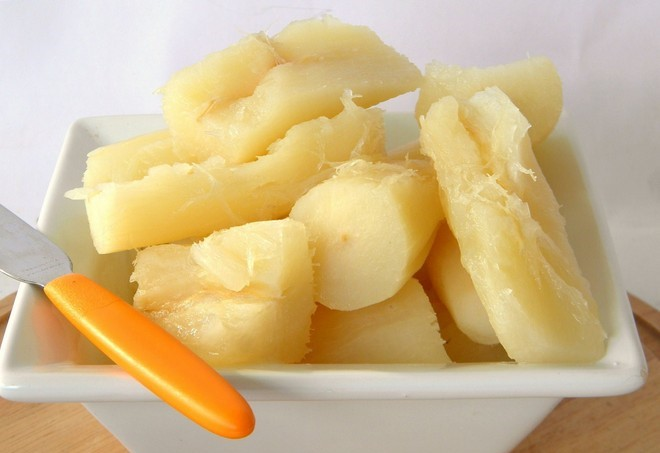

Pernambuco é rico não só em paisagens como também em culinária. Por isso, buscamos trazer pratos dessa cultura buscando atingir os mais diversos públicos para disseminar cada dia mais esse Estado tão lindo (e arretado). Aproveite nosso cardápio e não esqueça de nos seguir no LinkedIn caso esteja satisfeito(a) com os nossos serviços.
